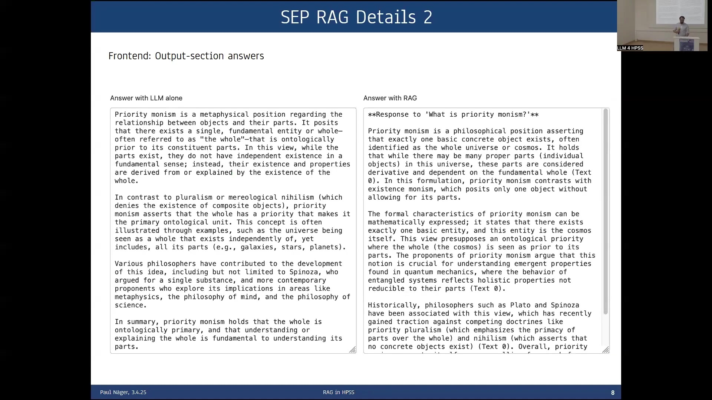

12 Retrieval Augmented Generation (RAG) in Philosophical Research: Applications and Methodological Challenges
Overview
Philosophical inquiry, a discipline demanding exceptional linguistic and semantic precision, increasingly explores the application of Retrieval Augmented Generation (RAG) systems. Standard Large Language Models (LLMs), however, pose significant limitations for rigorous philosophical research. These include restricted access to complete textual sources, a propensity for hallucination, an inability to learn texts verbatim, and constrained context windows.
RAG architecture directly addresses these issues. By integrating a curated data corpus, a sophisticated retrieval mechanism, and prompt augmentation with retrieved text, RAG enables direct text access, manages extensive corpora, and crucially, facilitates robust source attribution. Its potential applications in philosophy are broad, encompassing both didactic and research uses. In didactics, RAG systems could allow students to interactively explore complex texts, such as Locke’s Essay concerning Human Understanding. For research, applications range from efficient fact retrieval from handbooks and the exploration of previously unexamined corpora, to the identification of specific passages for close reading, and ultimately, the potential to answer nuanced research questions.
To investigate these promising applications, researchers constructed an example RAG system, utilising the Stanford Encyclopedia of Philosophy (SEP) as its primary data source. They meticulously scraped the SEP’s content, converting it into markdown format. Initial development, however, revealed surprisingly poor performance from basic RAG configurations, prompting a qualitative study into optimal system architectures. This comprehensive study necessitated extensive refinement of various components. Researchers meticulously tweaked model choices, including generative LLMs like gpt-4o-mini and embedding models, alongside numerous hyperparameters such as top-k, token limits, temperature, chunk size, and overlap. They also explored algorithmic enhancements, notably reranking mechanisms. Evaluating the unstructured text answers, which frequently articulated complex philosophical propositions, proved particularly challenging, underscoring the critical need for robust evaluation standards.
Crucial findings emerged regarding chunking strategies: these profoundly impact system performance. For the highly systematised SEP, treating entire main sections—averaging 3,000 words—as individual retrievable documents yielded demonstrably superior results. This outcome proved counter-intuitive, as these sections considerably exceeded the embedding model’s typical input length of approximately 500 words. Furthermore, reranking retrieved documents using a generative LLM to assess relevance substantially enhanced performance. This process, which scores documents based on informativeness and the length of relevant passages, significantly improved the quality of generated answers, albeit at an increased computational cost. Whilst RAG systems adeptly integrate verbatim corpora, mitigate hallucinations, and provide citations, they demand meticulous, corpus-specific tuning. A significant challenge, however, became apparent: RAG systems may underperform on broad overview questions. Their inherent focus on locally retrieved information can inadvertently obscure the larger conceptual landscape. This observation points towards a compelling need for more flexible, perhaps agentic, RAG systems, capable of discerning and adapting to diverse question types.
12.1 Addressing LLM Limitations in Philosophical Inquiry with Retrieval Augmented Generation

Philosophical inquiry frequently grapples with intricate questions. Consider, for instance, elucidating Aristotle’s theory of matter within the Physics, or tracing the evolution of Einstein’s concept of locality from his early works on relativity to his 1948 paper addressing quantum mechanics and ‘Wirklichkeit’. Whilst standard Large Language Models (LLMs) like ChatGPT can generate superficially plausible and differentiated responses to such queries, they exhibit significant limitations when applied to rigorous philosophical research.
A primary constraint involves access to textual sources. LLMs typically lack dynamic access to the full text of scholarly works, even if those texts formed part of their training data. Consequently, requests for specific quotations from chapters or papers may lead to hallucinations or an admission of inability. Even when online search capabilities are activated, copyright restrictions can prevent the reproduction of material.
Furthermore, the fundamental training mechanisms of LLMs are engineered to avoid mere parroting of texts. Instead, they learn generalisable statistical patterns of language production, with explicit mechanisms preventing verbatim memorisation. This contrasts sharply with the needs of philosophical research, which hinges on meticulous engagement with original source materials and their precise, fine-grained formulations. The limited context window of current LLMs—for instance, ChatGPT-4o’s 128,000 tokens—also poses a significant hurdle when dealing with extensive philosophical corpora.
To surmount these challenges, researchers propose Retrieval Augmented Generation (RAG) systems. A RAG system’s architecture typically involves a curated data source, such as the complete corpus of Aristotle’s or Einstein’s writings. From this source, documents are retrieved using methods like semantic search, hybrid approaches, or traditional keyword search. These retrieved documents, or relevant chunks thereof, then augment the user’s original prompt before processing by the LLM. This setup directly tackles the problem of text access, provides a mechanism for managing large context sizes by focusing on relevant segments, and crucially, facilitates attribution by enabling the system to cite the sources for its generated claims, much like the numbered citations seen in tools such as Perplexity AI.
12.2 Applications of RAG Systems in Philosophical Scholarship

RAG systems offer a promising avenue for interacting with philosophical corpora, distinguished by their capacity to integrate detailed domain knowledge and rely on verbatim textual evidence. This capability opens several valuable applications within philosophical scholarship, broadly categorised into didactic and research uses.
In the realm of didactics, RAG systems can transform how students engage with challenging philosophical texts. For instance, students approaching Locke’s Essay concerning Human Understanding can benefit immensely from the ability to pose repeated questions. This iterative process proves highly instructive, allowing them to start with broad inquiries, such as “What is Locke’s general idea?”, and progressively delve into more specific aspects, like “What is his idea in epistemology?” or “What is his theory of matter?”. Such interactions foster a deeper, more nuanced understanding of the material.
Beyond educational settings, RAG systems hold significant potential for research. They can streamline the process of looking up facts in handbooks, a task that traditionally involved manually searching physical volumes for information, perhaps for a footnote. RAG offers a more efficient method, potentially with greater reliability than relying on the unverified outputs of standard LLMs. Furthermore, researchers can employ RAG systems to explore unexamined corpora; once digitised, collections of unpublished manuscripts or less-studied texts can be “chatted with” to gain an overview and deeper insights into their content. Another key research application is the identification of specific passages relevant to a particular research question, thereby facilitating focused close reading. Ultimately, the aspiration is that RAG systems might, at some point, become capable of providing detailed answers to at least certain components of complex philosophical research questions.
12.3 Developing and Refining a RAG System for Philosophical Texts: The SEP RAG Project
Researchers embarked on a project to construct an example RAG system, selecting the Stanford Encyclopedia of Philosophy (SEP)—a widely respected online handbook—as the primary data source. The initial step involved scraping the SEP’s content and converting it into markdown format. Originally, the ambition was to develop a directly useful tool for the philosophical community. However, early attempts to implement a standard textbook RAG system, comprising distinct retrieval and generation components, produced answers of surprisingly poor quality; indeed, these initial outputs were often inferior to those obtainable from a standalone LLM like ChatGPT.
This experience prompted a significant shift in focus. The project evolved into a qualitative study aimed at determining the optimal configuration for RAG systems tailored to the specific demands of philosophical texts. Achieving improved performance necessitated a meticulous process of refining numerous aspects of the system. This involved careful selection of both the generative LLM and the embedding model responsible for understanding text semantics. Extensive hyperparameter tuning became essential, covering parameters such as top-k (the number of documents retrieved), maximum input and output token lengths, the temperature or top-p settings influencing the creativity of the generated text, and the strategies for chunk size and overlap in document segmentation. Beyond parameter adjustments, researchers explored more complex algorithmic solutions, such as implementing reranking mechanisms to mitigate problems like semantic mismatch between the query and retrieved documents.
The methodology for enhancing the system was predominantly one of trial and error, guided by theoretical insights into how RAG components interact. A significant hurdle encountered throughout this process was the evaluation of the system’s output. Philosophical RAG systems generate answers in free, unstructured text, often articulating complex propositions rather than simple atomic facts (unlike, for example, a historical query seeking Wittgenstein’s last place of living, which expects a city name). Consequently, robust evaluation standards are paramount to assess whether these generated propositions accurately convey the intended philosophical concepts and facts, a non-trivial task.
12.4 SEP RAG System: Interface and Functionality Details
The developed Stanford Encyclopedia of Philosophy RAG (SEP RAG) system features a user-facing frontend and a backend constructed with Python, amounting to a few thousand lines of code. The frontend interface provides users with considerable control over the generation process. Within its input section, users can configure several key parameters: they can select the generative model (with gpt-4o-mini shown as an example), view the chosen model’s maximum prompt token limit (e.g., 128,000 tokens), and set a specific prompt token limit for the RAG system’s input (e.g., 15,000 tokens). Additionally, users can define a persona for the LLM—for instance, “You are an expert philosopher. You answer meticulously and precisely”—and specify the number of texts to retrieve for context (e.g., 15). A dedicated field allows for the input of a philosophical question, such as “What is priority monism?”, followed by a “Generate answer” button to initiate the process.
Upon generation, the system presents its output in a structured manner. Notably, it offers a comparative view, displaying the answer from a standalone LLM (serving as a benchmark) alongside the answer produced by the SEP RAG system. This side-by-side presentation facilitates a more effective assessment of the RAG system’s contribution. Furthermore, the output includes a detailed list of the texts retrieved from the SEP. This list specifies the names of the articles and the particular section headings that the system identified as relevant. Crucially, it also indicates which of these retrieved texts were ultimately included in the augmented prompt passed to the LLM and which, if any, were truncated due to the imposed prompt length limitations.
12.5 Optimising Document Chunking for Philosophical Corpora

Researchers dedicated particular attention to optimising the hyperparameter of chunk size, which dictates how documents are segmented for retrieval and processing. They explored several distinct options for this segmentation. One approach involved a fixed number of words or tokens, for example, 500, a method often favoured in computer science for its straightforward implementation. Another considered using natural paragraph breaks as delimiters. A third strategy focused on segmenting the source material by its inherent sections, potentially at various levels of the document hierarchy.
Through experimentation with the Stanford Encyclopedia of Philosophy, a clear finding emerged: the most effective results were achieved when entire main sections of SEP articles were treated as the individual “documents” for retrieval. This outcome was somewhat surprising because the average length of these main sections—around 3,000 words—considerably surpassed the input limit of the embedding model, which could process only a little over 500 words at a time.
The proposed explanation for this counterintuitive success rests on the specific nature of the SEP. It is a highly systematised and meticulously structured encyclopedic work. Within such a well-organised corpus, the initial portion of a main section (the first 500 words or so that the embedding model can ingest) likely contains enough concentrated information to represent the semantic core of the entire section adequately. However, it is important to note a caveat: this successful strategy of using large, section-level chunks may not be universally applicable. Its efficacy is probably tied to the SEP’s unique characteristics and might not translate effectively to more heterogeneous textual collections or corpora that lack such a high degree of internal systematisation and clear structural demarcation.
12.6 Implementing Reranking to Enhance Retrieval Relevance

Researchers identified that an initial retrieval process, even one based on semantic similarity, can sometimes include documents that are not genuinely relevant to the user’s specific question—these are known as false positives. To address this limitation, they incorporated an additional step: reranking. The primary aim of reranking is to re-evaluate and reorder the initially retrieved set of documents, arranging them according to their true relevance to the posed query.
The implemented solution involves leveraging a generative Large Language Model (gLLM) to perform this relevance assessment. This choice stems from the understanding that gLLMs exhibit more sophisticated semantic differentiation capabilities than embedding models can offer on their own. Consequently, a gLLM can provide a more nuanced and accurate judgement of how well each retrieved text pertains to the question. During the reranking process, the gLLM scores each candidate document based on specific categories, notably its informativeness concerning the query and the length of the relevant passage contained within it. These individual scores are then aggregated into a “Total Score,” which quantifies the overall relevance of each document.
The introduction of this reranking stage proved highly effective. Evaluations demonstrated that it leads to very good results, significantly enhancing the quality and relevance of the documents ultimately used to generate the answer. However, this improvement comes at a cost: the reranking step, by invoking a powerful gLLM for each retrieved document, substantially multiplies the computational resources required, which in turn can increase the monetary expense of operating the RAG system.
12.7 Overall Assessment: Advantages, Caveats, and Future Directions for RAG in Philosophy
Retrieval Augmented Generation systems present several distinct advantages for philosophical scholarship. They can seamlessly integrate verbatim corpora, ensuring that answers are grounded in authentic textual evidence, and can effectively incorporate domain-specific and specialised knowledge. These capabilities lead to the generation of more detailed answers and, crucially, a dramatic reduction in the incidence of hallucinations. Furthermore, the ability of RAG systems to cite the relevant documents underpinning their responses directly supports scientific rigour and verifiability, making them, in principle, well-suited for assisting in scholarly tasks.
Nevertheless, several points of caution warrant consideration. RAG systems are not “plug-and-play” solutions; they inherently demand extensive and continuous tweaking to achieve optimal performance. The ideal settings for hyperparameters and model choices are not universal but are instead highly contingent upon the specific characteristics of the corpus in use and the nature of the questions typically posed to the system. Rigorous evaluation of RAG outputs is paramount. This requires establishing a representative set of test questions along with clearly defined expected or ideal answers. Such evaluation processes become particularly challenging when working with unexplored or novel corpora, and the active involvement of domain experts—in this case, philosophers—is indispensable for any meaningful assessment of quality and accuracy.
Researchers also identified specific challenges and limitations. A significant issue arises if the retrieval mechanism fails to locate any relevant documents; in such instances, the quality of the generated answer tends to decrease substantially, often necessitating adjustments to the user’s prompt. An intriguing, somewhat counterintuitive finding was that RAG systems can sometimes produce worse results for broad, widely discussed overview questions, such as “What are the central arguments against scientific realism?”. The hypothesised reason for this phenomenon is that the RAG system’s operational prompt directs it to focus intently on the local information contained within the retrieved texts. This localised focus, whilst beneficial for specific queries, can inadvertently distract from or fail to adequately synthesise the broader, more encompassing perspective required to answer overview questions comprehensively.
Looking ahead, these observations underscore the need for more flexible RAG systems. Future developments may involve systems capable of discerning between different types of questions and adapting their strategies accordingly, potentially moving in the direction of more sophisticated “agentic” RAG architectures.